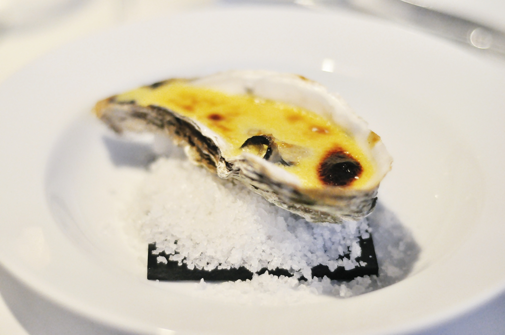

Welcome to austrės
Austres.lt – gurmanų rifas.
2020.10.29 10:04
Krepšelis Užsakyti Prekės Informacija Apie mus Austrių vakarėlis Perlinės vestuvės Pristatymo informacija Privatumo politika Verta žinoti Austrių regionai Austrių istorija Austrių rūšys Austrių festivaliai Austrių gliaudymas ir patiekimas Receptai Svetainės medis Pradžia Naujienos Nuorodos Kontaktai Paskyra Sveiki, Jūs galite prisijungti arba susikurti paskyrą . MIDIJOS / KREVETĖS AUSTRĖS AUSTRIŲ PEILIAI / LĖKŠTĖS NAUJIENOS DIRBINIAI IŠ AUSTRIŲ GELDELIŲ
Prekės
Creuses Karanteg KERALIOU
1.70 € Previous NextNaujausios prekės
12.50 €Peilis austrėms P4
Nerūdijančio metalo peilis austrėms atverti. ..
Į krepšelį Lyginti šią prekę su kita 3.00 €AUSTRIŲ GELDELIŲ ŽVAKIDĖ
..
Į krepšelį Lyginti šią prekę su kita 28.00 €LĖKŠTĖ AUSTRĖMS SERVIRUOTI L12
..
Į krepšelį Lyginti šią prekę su kita 21.00 €LĖKŠTĖ AUSTRĖMS SERVIRUOTI L11
..
Į krepšelį Lyginti šią prekę su kita 21.00 €LĖKŠTĖ AUSTRĖMS SERVIRUOTI L10
..
Į krepšelį Lyginti šią prekę su kita 21.00 €LĖKŠTĖ AUSTRĖMS SERVIRUOTI L9
..
Į krepšelį Lyginti šią prekę su kita 25.00 €Lėkštė austrėms serviruoti L8
Prancūziška lėkštė austrių serviravimui, sidabriniu, blizgiu krašteliu. ..
Į krepšelį Lyginti šią prekę su kita 50.00 €Dovanų Kuponas www.austres.lt
Kupono vertė 50,00Eur. Kupono galiojimo laikas- 1metai. Tai puiki dovana Jūsų Gurmanui..
Į krepšelį Lyginti šią prekę su kita 5.00 €Baro peilis citrinoms
Nerūdijančio plieno vaisių peilis naudojamas ruošiant vaisius. Kitaip nei paprastų peilių, ..
Į krepšelį Lyginti šią prekę su kita 2.20 €Austrės Creuses SP ISTRENN
Išskirtinio, sūraus skonio austrė.Dydis Nr 1 Prancūzija, Normandija ..
Į krepšelį Lyginti šią prekę su kita 1.80 €Austres Creuses SP JOLIE MAUGER 2
Austrė saldi, mėsinga su jodo poskoniu. Dydis Nr 2 Šis unikalus skonis išgaunamas auginan..
Į krepšelį Lyginti šią prekę su kita 2.50 €Crassostrea gigas (Nr.0)
Crassostrea gigas (Nr.0) Puikiai tiks kepti orkaitėje ar kepsninėje. Laikymo temperatūra -..
Į krepšelį Lyginti šią prekę su kita 1.90 €CAP HORN
Ypatingosios CAP HORN Les Huîtres du Cap Horn- tai keturių kartų kompanija, puoselėjanti trad..
Į krepšelį Lyginti šią prekę su kita 19.50 €Lesyklėlė- Austrė
Lesyklėlė su austrių geldelių stogeliu. Lesyklėlės viduje, įklijuota didesnė geldelė les..
Į krepšelį Lyginti šią prekę su kita 18.90 €Inkilas varnėnui- Austrė 2
Inkiliukas dengtas austrių geldelėmis. Austrių geldelės- natūralus kalcio šaltinis. Ne velt..
Į krepšelį Lyginti šią prekę su kita 10.00 €Balzaminio acto perlai
Balzamiko perlai gaminami iš geriausio Modenos balzaminio acto. Balzaminis actas, taikant specif..
Į krepšelį Lyginti šią prekę su kita 3.00 €Peilis austrėms
Peilis austrems atverti. ..
Į krepšelį Lyginti šią prekę su kita 15.00 €Dovaninė austrių dėžutė PREMIER ZEEVWSE
Dėžutėje 6vnt austrių ir peilis austrėms gliaudyti. Laikymo temperatūra - nu..
Į krepšelį Lyginti šią prekę su kita 2.70 €Cadoret-R selection
Austrės minkštimas storas, tvirtas, traškus ir tuo pat metu aksominis, turi lazdyno riešutų ..
Į krepšelį Lyginti šią prekę su kita 21.00 €Lėkštė ausrėms serviruoti L6
Villeroy&Boch lėkštė 6vnt austrėm serviruoti. Diametras 24cm ..
Į krepšelį Lyginti šią prekę su kita 21.00 €Lėkštė ausrėms serviruoti L4
Lėkštė austrėms serviruoti. Pagaminta Prancūzijoje , keramikinė, sutalpinsite 6vnt aust..
Į krepšelį Lyginti šią prekę su kita 21.00 €Lėkštė ausrėms serviruoti L3
Prancūziška lėkštė austrių serviavimui. ..
Į krepšelį Lyginti šią prekę su kita 100.00 €AUSTRIŲ DEGUSTACINIS VAKARAS
Austrės - gurmanų ypač vertinamas delikatesas. Sakoma, jog jos įkūnija pačios jūros skonį..
Į krepšelį Lyginti šią prekę su kita 1.70 €Didžiosios austres Fin. De Normadie
Didžiosios austres Fin. De Normadie, Prancūzija. Dydis: Nr.2 Laikymo temperatūr..
Į krepšelį Lyginti šią prekę su kita 10.00 €Knyga- AUSTRĖS
Pristome mūsų knygą "AUSTRĖS" Mums austrės- tai ne tik patiekalas, tai ištisa istorija,..
Į krepšelį Lyginti šią prekę su kita 15.00 €Lėkštė ausrėms serviruoti L2
Puiki austrių serviravimo lėkštė. Diametras 24,5cm ..
Į krepšelį Lyginti šią prekę su kita 2.00 €Atidarytos austrės
Jums pageidaujant atidarome austres. Jums tereikia nurodyti norimą austrių kiekį, mes pas..
Į krepšelį Lyginti šią prekę su kita 14.00 €Moteriška apsauginė pirštinė
Pirštinė skirta apsaugoti rankas atidarinėjant austres. Atspari įpjovimams. ..
Į krepšelį Lyginti šią prekę su kita 15.00 €Lėkštė austrėms serviruoti L7
Austrių serviravimo lėkštė. Diametras 24.5cm ..
Į krepšelį Lyginti šią prekę su kita 1.00 €Jūros dumbliai GOMA WAKAME
Jūros dumbliais pagardinta austrė puikiai tinka ieškantiems kažko naujo ir pikantiško. J..
Į krepšelį Lyginti šią prekę su kita 39.00 €Lėkštė austrėms serviruoti D1
Didelė ir puiki, storo stiklo austrių lėkštė skirta serviruoti austres ant ledukų. Lėk..
Į krepšelį Lyginti šią prekę su kita 24.00 €Apsauginė pirštinė PI1
Pirštinė skirta apsaugoti rankas, atidarinėjant austres. Dydis Nr.9. ..
Į krepšelį Lyginti šią prekę su kita 2.00 €Balzaminio acto padažas austrėms
Balzaminio acto ir mėlynųjų svogūnėlių padažas 20ml Puikiai tinka austrėms pagardinti..
Į krepšelį Lyginti šią prekę su kita 1.00 €Krepšelis austrėms
Krepšelis sudėti austrėms su www.austres.lt simbolika. ..
Į krepšelį Lyginti šią prekę su kita 3.50 €Tabasko padažas TABASCO
Padažas su aitriaisiais pipirais "TOBASCO" 60ml Skirtas visiems aštraus maisto mėgė..
Į krepšelį Lyginti šią prekę su kita 0.50 €Citrina
Šviežios citrinos puikiai tinka paryškinti subtilų austrės skonį. ..
Į krepšelį Lyginti šią prekę su kita 9.90 €Peilis austrėms atverti P4
Plastikinis peilis su metaline geležte. ..
Į krepšelį Lyginti šią prekę su kita 9.90 €Peilis austrėms P6
Plastikinis peilis su metaline geležte. ..
Į krepšelį Lyginti šią prekę su kita 7.00 €Peilis austrėms su plastikine rankena P7
Peilis austrių geldelių atvėrimui. Geležtė - metalinė, rankena - plastikas. ..
Į krepšelį Lyginti šią prekę su kita 24.00 €Apsauginė pirštinė PI
Pirštinė, skirta apsaugoti rankas atidarinėjant austres. Dydis Nr.8. ..
Į krepšelį Lyginti šią prekę su kita 14.00 €Peilis austrėms
Peilis austrių atidarymui. Kriaunos metalinės, rankena - medinė. Kilmės šalis: Japonija...
Į krepšelį Lyginti šią prekę su kita 19.90 €Peilis austrėms P3
Peilis austrėms pagamintas iš nerūdijančio plieno 18/10. Patogi rankena, tvirtas ir ilgaamži..
Į krepšelį Lyginti šią prekę su kita 1.00 €Austrių rankšluostukas
Baltas rankšluostukas, kuris padės patogiai atidaryti austrių geldeles. ..
Į krepšelį Lyginti šią prekę su kita 9.90 €Peilis austrėms su metaline rankenėle P5
Elegantiškas ir patogus peilis, skirtas atidarinėti austrių geldeles. Su metaline rankena. ..
Į krepšelį Lyginti šią prekę su kita 1.70 €Creuses Karanteg KERALIOU
Tai austrės iš Bretanės, Prancūzijos regiono, esančio šios šalies šiaurės vakaruose prie..
Į krepšelį Lyginti šią prekę su kita 1.70 €Marennes Oleron
Vienos austrės svoris: 80-100 g. Kilmės šalis - Prancūzija. Auginamos Prancūzijos regiono Ch..
Į krepšelį Lyginti šią prekę su kitaAustres.lt – gurmanų rifas.
Pasidalink su draugais
Elektroninių parduotuvių kūrimas - Svetaine.lt